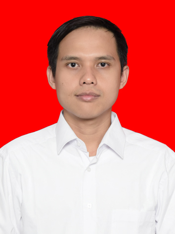

Susilo Widyatmoko
Bridge engineer · Balanced-cantilever construction engineering · Shell finite elements Tenaga ahli jembatan · Construction engineering balanced cantilever · Elemen hingga shell
I help contractors build post-tensioned concrete bridges safely and accurately, through construction-stage analysis, camber control and tendon design. Alongside practice, I am a doctoral researcher at Universitas Indonesia developing plate and shell finite elements.
Saya membantu kontraktor membangun jembatan beton post-tension secara aman dan presisi, melalui analisis tahapan konstruksi, kontrol camber, dan desain tendon. Di samping praktik, saya sedang menempuh program doktor di Universitas Indonesia, mengembangkan elemen hingga plat dan shell.

What I doBidang keahlian
Construction engineering (CES)Construction engineering (CES)
Construction-stage analysis of balanced-cantilever box girders: stresses and deflections at every stage, precamber of each segment, closure sequence, unbalanced moments. Experience includes five horizontally curved bridges.
Analisis tahapan konstruksi box girder balanced cantilever: tegangan dan lendutan setiap tahap, precamber tiap segmen, urutan closure, momen tidak seimbang. Termasuk lima jembatan lengkung horizontal.
Post-tensioningPost-tension
Tendon design and prestress losses, jacking-force and elongation reports, on-site friction tests and tendon shop drawings for bridges and prestressed girders (I, U and box, 20–50 m).
Desain tendon dan kehilangan prategang, laporan gaya jacking dan elongasi, uji friksi di lapangan, serta shop drawing tendon untuk jembatan dan girder prategang (I, U, box, 20–50 m).
Shell finite elementsElemen hingga shell
Doctoral research on plate and shell elements: linear and nonlinear, isotropic, composite and FGM. Co-developer of the BAK plate element and the 24-DOF BKWH shell element.
Riset doktor tentang elemen plat dan shell: linear dan nonlinear, isotrop, komposit, dan FGM. Turut mengembangkan elemen plat BAK dan elemen shell 24 DOF BKWH.
Bridge accessories & toolsAksesoris jembatan & alat bantu
Technical checks of pot bearings and expansion joints; internal calculation templates for bearing pads and LRB; MATLAB/Excel automation for load combinations, stress envelopes and reports.
Pengecekan teknis pot bearing dan expansion joint; template perhitungan internal bearing pad dan LRB; otomasi MATLAB/Excel untuk kombinasi beban, envelope tegangan, dan laporan.
ExperiencePengalaman kerja
- Jul 2016 – presentJul 2016 – sekarang
Design Engineer — PT Delta Systech Indonesia (DSI)
Post-tensioning, stay-cable systems, bearings & expansion jointsSistem post-tension, cable stay, perletakan & expansion joint - Dec 2014 – Jun 2016Des 2014 – Jun 2016
Project Engineer — PT Zulin Indonesia
Formwork & scaffoldingBekisting & perancah - Jan 2013 – Dec 2014Jan 2013 – Des 2014
Junior Engineer — PT LAPI Ganeshatama & MIS ITB
Water resourcesSumber daya air
Education & certificationPendidikan & sertifikasi
- 2024 – present2024 – sekarang
Ph.D. Civil EngineeringS3 Teknik Sipil — Universitas Indonesia
Shell finite elementsElemen hingga shell - 2023 M.Eng. Structural EngineeringS2 Rekayasa Struktur — Universitas Indonesia
- 2014 B.Eng. Civil EngineeringS1 Teknik Sipil — Institut Teknologi Bandung
- 2024 – 20292024 – 2029 SKK Associate Expert in Bridge Engineering (level 8)SKK Ahli Madya Teknik Jembatan (jenjang 8)
ContactKontak
Open to collaboration on bridge construction engineering, post-tensioning and finite-element research.
Terbuka untuk kolaborasi di bidang construction engineering jembatan, post-tension, dan riset elemen hingga.